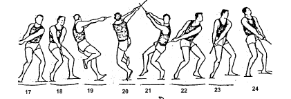

O martelo é constituído por uma bola de ferro presa a uma alça por um arame metálico.
O peso total do engenho na categoria masculina é 7,26 kilos e na categoria feminina é 4 kilos.
O procedimento de lançamento divide-se em 3 etapas:
- - O lançador inicia o movimento virado de costas para a secção de lançamento, segurando a alça com as duas mãos e mantendo os pés imóveis;
- - Gira o martelo três ou quatro vezes para que este ganhe velocidade;
- - Por fim quando o martelo ganha velocidade suficiente, lança-o para a frente e para a cima.
